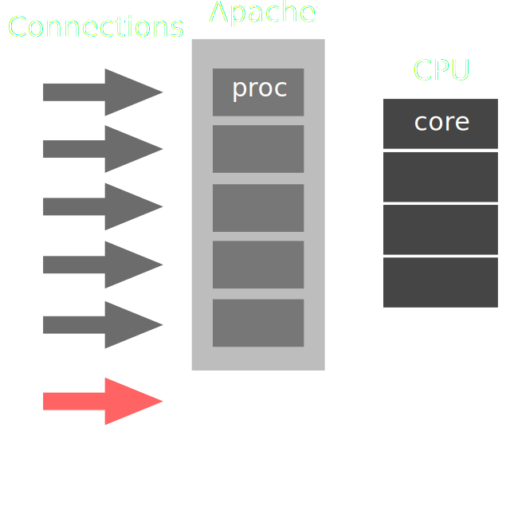
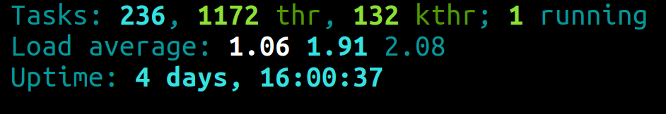
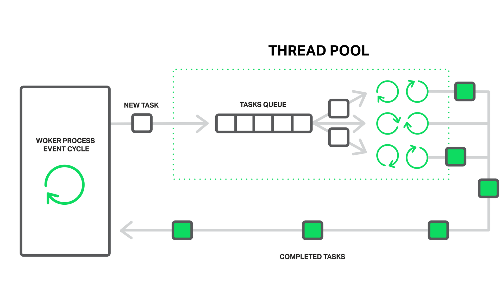
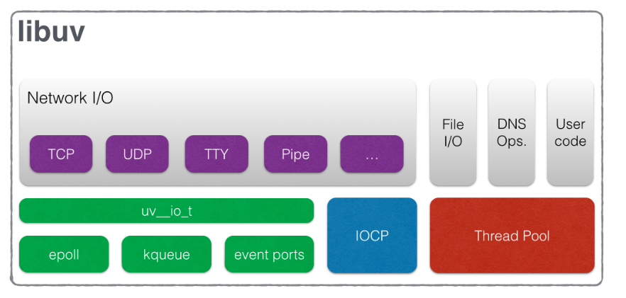
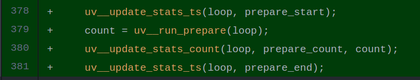

Event-Driven Architecture:
детали реализаций Event Loop
- Вадим Горбачев
- twitter: @_bmsdave
- @bmsdave
План доклада:
Event-Driven Architecture
берет начало в 1970-e
- 1. Генератор событий
- 2. Канал событий
- 3. Механизм обработки событий
- 4. Последующее действие, управляемое событиями
Применение
- Основа всех (ну или почти всех) GUI
- Aльтернатива многопоточным приложениям
- Разработка игр
Web Server
A New Hope
Давным давно в далекой далекой галактике появился apache HTTP server
(созданный в 1995 году), так как это первый проект apache foundation,
его обычно называют просто apache.
Важную роль в apache выполняет модуль MPM (Multi-Processing Module),
который, грубо говоря, отвечает обработку нескольких запросов
несколькими процессами. Один из наиболее частых режимов использования
которого mpm_prefork.
Суть его в том, что на 1 запрос обрабатывает отдельный процесс с одним потоком.
В этом режиме может быть запущено определенное количество `X` процессов,
их количество, по большей части ограничивается RAM на сервере.
И как вы думаете, что произойдет если придет `X+1` запрос?
Верно, он будет ждать пока освободится процесс.
apache Multi-Processing Module
mpm_prefork
Проблема такого подхода
- Затраты на переключение между процессами
- Рост потребляемой памяти
load average
1999 г. c10k
Ден Кегель, администратор FTP-сервера Simtel
обозначил проблему c10k [1]
2004 г. 
 [2]
ngixn vs apache
ngixn vs apache
ngixn vs apache
2009 г. 

Выгода
- "контроль" над CPU
- экономия RAM
- экономия на переключении контекстов
Проблемы EDA
1. Проблемы удобства
- 1. отсутствие call stack
- 2. сильно большая свобода
2. Отравление обработчика
2.1. ReDoS[3]
O(n^2)
// Django
const email = /^\S+@\S+\.\S+$/;
email.test('@'.repeat(10)); // 0ms
email.test('@'.repeat(100)); // 0ms
email.test('@'.repeat(1000)); // 1ms
email.test('@'.repeat(10000)); // 132ms
email.test('@'.repeat(100000)); // 13506ms2.1. ReDoS[3]
O(E^n)
// Microsoft project
const user = /^[a-zA-Z0–9]+([._]?[a-zA-Z0–9]+)*$/;
user.test('a'.repeat(10));
user.test('a'.repeat(100));
user.test('a'.repeat(1000));
user.test('a'.repeat(10000));
user.test('a'.repeat(100000));2.1. ReDoS[3]
O(E^n)
// Microsoft project
const user = /^[a-zA-Z0–9]+([._]?[a-zA-Z0–9]+)*$/;
user.test('a'.repeat(10)); // 0ms
user.test('a'.repeat(100)); // 0ms
user.test('a'.repeat(1000)); // 0ms
user.test('a'.repeat(10000)); // 0ms
user.test('a'.repeat(100000)); // 1ms2.1. ReDoS[3]
O(E^n)
// Microsoft project
const user = /^[a-zA-Z0–9]+([._]?[a-zA-Z0–9]+)*$/;
user.test('a'.repeat(10) + "!"); // 1ms
user.test('a'.repeat(15) + "!"); // 10ms
user.test('a'.repeat(20) + "!"); // 335ms
user.test('a'.repeat(25) + "!"); // 675ms
user.test('a'.repeat(30) + "!"); // 11587ms2.1. ReDoS[3]
Решение
- Замена на строковые операции
- Ограничение длины
- Ревизия regexp
2.1. ReDoS[3]
O(E^n)
// Microsoft project
const user =
/^[a-zA-Z0–9]{1}[._a-zA-Z0–9]*[a-zA-Z0–9]{1}$/;
user.test('a'.repeat(10) + "!"); // 0ms
user.test('a'.repeat(15) + "!"); // 0ms
user.test('a'.repeat(20) + "!"); // 0ms
user.test('a'.repeat(25) + "!"); // 0ms
user.test('a'.repeat(30) + "!"); // 0ms3. Падение очереди на обработке одного события
Обязывает реализовывать "retry"
Проблемы EDA
- 1. Проблемы удобства
- 2. Отравление обработчика
- 3. Падение очереди на обработке одного события
[4]libuv 
15000 строк кода
uv_run [5]
int uv_run(uv_loop_t* loop, uv_run_mode mode) {
while (r != 0 && loop->stop_flag == 0) {
uv__update_time(loop);
uv__run_timers(loop);
ran_pending = uv__run_pending(loop);
uv__run_idle(loop);
uv__run_prepare(loop);
/* *** */
uv__io_poll(loop, timeout);
uv__run_check(loop);
uv__run_closing_handles(loop);
/* *** */
}Как вы думаете где в libuv реализация microtasks и nextTick?
Что можно заметить
- Нет приоритизации
- Обход является синхронным
Другие реализациии
- Tokio.rs (Rust)

- Data Kernel (Java)

- Vert.x (Java)
Мотивация использовать tokio в deno
Event loop в браузерах
whatwg [6]
eventLoop = {
taskQueues: {},
microtaskQueue: [],
nextTask: function() {},
executeMicrotasks: function() {},
needsRendering: function() {},
render: function() {}
}
while(true) {}tasks/microtasks
taskQueues: {
events: [], // UI events
parser: [], // HTML parser
callbacks: [], // setTimeout, requestIdleTask
resources: [], // image loading
domManipulation[]
},
microtaskQueue: []
loop
while(true) {
task = eventLoop.nextTask();
if (task) {
task.execute();
}
eventLoop.executeMicrotasks();
if (eventLoop.needsRendering())
eventLoop.render();
}nextTask
nextTask: function() {
// Spec says:
// "Select the oldest task on one
// of the event loop's task queues"
// Which gives browser
// implementers lots of freedom
// Queues can have different priorities, etc.
for (let q of taskQueues)
if (q.length > 0)
return q.shift();
return null;
}render
render: function() {
dispatchPendingUIEvents();
resizeSteps();
scrollSteps();
mediaQuerySteps();
cssAnimationSteps();
fullscreenRenderingSteps();
animationFrameCallbackSteps();
while (resizeObserverSteps()) {
updateStyle(); updateLayout();}
intersectionObserverObserves();
paint();
}Все ли придерживаются спеки? Почти
whatwg support [7]
puzlers
new MutationObserver(function() {
console.log('mutate');
}).observe(outer, {attributes: true});
function onClick() {
console.log('click');
setTimeout(()=>{console.log('timeout');}, 0);
Promise.resolve().then(()=>{console.log('promise')})
outer.setAttribute('data-random', Math.random());
}
inner.addEventListener('click', onClick);
outer.addEventListener('click', onClick);Ожидания
- click
- promise
- mutate
- click
- promise
- mutate
- timeout
- timeout
2015г.
2019г.
- click
- promise
- mutate
- click
- promise
- mutate
- timeout
- timeout
Пример с тестами и
const button = document.getElementById('test5');
button.addEventListener('click', () => {
Promise.resolve().then(()=>console.log('mtask 1'));
console.log('listener 1');
});
button.addEventListener('click', () => {
Promise.resolve().then(()=>console.log('mtask 2'));
console.log('listener 2');
});
Есть ли у нас инструменты анализировать event loop?
tools
1764
В Node.js
process._getActiveRequests();
process._getActiveHandles();
В Node.js
-------------------
handles: [ WriteStream {
connecting: false,
_hadError: false,
_handle:
TTY {
onread: [Function: onStreamRead],
[Symbol(owner)]: [Circular] },
_parent: null,
_host: null,
_readableState:
ReadableState {
objectMode: false,
highWaterMark: 16384,
buffer: BufferList { length: 0 },
length: 0,
pipes: null,
pipesCount: 0,
flowing: null,
ended: false,
endEmitted: false,
reading: false,
sync: true,
needReadable: false,
emittedReadable: false,
readableListening: false,
resumeScheduled: false,
emitClose: false,
destroyed: false,
defaultEncoding: 'utf8',
awaitDrain: 0,
readingMore: false,
decoder: null,
encoding: null },
readable: false,
_events: { end: [Function: onReadableStreamEnd] },
_eventsCount: 1,
_maxListeners: undefined,
_writableState:
WritableState {
objectMode: false,
highWaterMark: 16384,
finalCalled: false,
needDrain: false,
ending: false,
ended: false,
finished: false,
destroyed: false,
decodeStrings: false,
defaultEncoding: 'utf8',
length: 0,
writing: false,
corked: 0,
sync: false,
bufferProcessing: false,
onwrite: [Function: bound onwrite],
writecb: null,
writelen: 0,
bufferedRequest: null,
lastBufferedRequest: null,
pendingcb: 5,
prefinished: false,
errorEmitted: false,
emitClose: false,
bufferedRequestCount: 0,
corkedRequestsFree: [Object] },
writable: true,
allowHalfOpen: false,
_sockname: null,
_pendingData: null,
_pendingEncoding: '',
server: null,
_server: null,
columns: 158,
rows: 44,
_type: 'tty',
fd: 1,
_isStdio: true,
destroySoon: [Function: destroy],
_destroy: [Function],
[Symbol(asyncId)]: 2,
[Symbol(lastWriteQueueSize)]: 0,
[Symbol(timeout)]: null,
[Symbol(kBytesRead)]: 0,
[Symbol(kBytesWritten)]: 0 },
WriteStream {
connecting: false,
_hadError: false,
_handle:
TTY {
onread: [Function: onStreamRead],
[Symbol(owner)]: [Circular] },
_parent: null,
_host: null,
_readableState:
ReadableState {
objectMode: false,
highWaterMark: 16384,
buffer: BufferList { length: 0 },
length: 0,
pipes: null,
pipesCount: 0,
flowing: null,
ended: false,
endEmitted: false,
reading: false,
sync: true,
needReadable: false,
emittedReadable: false,
readableListening: false,
resumeScheduled: false,
emitClose: false,
destroyed: false,
defaultEncoding: 'utf8',
awaitDrain: 0,
readingMore: false,
decoder: null,
encoding: null },
readable: false,
_events: { end: [Function: onReadableStreamEnd] },
_eventsCount: 1,
_maxListeners: undefined,
_writableState:
WritableState {
objectMode: false,
highWaterMark: 16384,
finalCalled: false,
needDrain: false,
ending: false,
ended: false,
finished: false,
destroyed: false,
decodeStrings: false,
defaultEncoding: 'utf8',
length: 0,
writing: false,
corked: 0,
sync: true,
bufferProcessing: false,
onwrite: [Function: bound onwrite],
writecb: null,
writelen: 0,
bufferedRequest: null,
lastBufferedRequest: null,
pendingcb: 0,
prefinished: false,
errorEmitted: false,
emitClose: false,
bufferedRequestCount: 0,
corkedRequestsFree: [Object] },
writable: true,
allowHalfOpen: false,
_sockname: null,
_pendingData: null,
_pendingEncoding: '',
server: null,
_server: null,
columns: 158,
rows: 44,
_type: 'tty',
fd: 2,
_isStdio: true,
destroySoon: [Function: destroy],
_destroy: [Function],
[Symbol(asyncId)]: 4,
[Symbol(lastWriteQueueSize)]: 0,
[Symbol(timeout)]: null,
[Symbol(kBytesRead)]: 0,
[Symbol(kBytesWritten)]: 0 },
Timer {
_list:
TimersList {
_idleNext: [Timeout],
_idlePrev: [Timeout],
_unrefed: false,
msecs: 1000,
_timer: [Circular] } } ]
requests: []
-------------------
Node11: Timer objects no longer show up in process._getActiveHandles() [8]
wtf Node.js?
wtfnode
[i] app/24191 on devbox: Server listening on 0.0.0.0:9001 in development mode
^C[WTF Node?] open handles:
- Sockets:
- 10.21.1.16:37696 -> 10.21.2.213:5432
- Listeners:
- connect: anonymous @ /home/me/app/node_modules/pg/lib/connection.js:49
- Servers:
- 0.0.0.0:9001
- Listeners:
- connection: connectionListener @ /home/me/app/app-framework/lib/listener.js:13
- Timers:
- (10000 ~ 10 s) wrapper @ ../knex/node_modules/pool2/lib/pool.js:80
- (300000 ~ 5 min) wrapper @ /home/me/app/services/foo.service.js:61Иногда Node.js не останавливается
- gulp tasks
- lambda functions
Why is node running?
why-is-node-running
There are 5 handle(s) keeping the process running
# Timeout
./node_modules/why-is-node-running/example.js:6 - setInterval(() => {}, 100)
./node_modules/why-is-node-running/example.js:10 - createServer()
# TCPSERVERWRAP
./node_modules/why-is-node-running/example.js:7 - server.listen(0)
./node_modules/why-is-node-running/example.js:10 - createServer()
# Timeout
./node_modules/why-is-node-running/example.js:13 - setTimeout(function () {Demo с devtools и timeline
fuzzing
Что бы решить проблему, нужно ее найти
Demo API login+pass
TODO: requests
$ node ./attaker.js v7 917 v7_wrong 40 v7_wrong2 39
TODO: таким образом мы познакомились с тайминговыми атаками
TODO: загрузить event loop запросами чтобы он не мог отвечать и показать как будет вести себя интерфейс
TODO: выводы о примере и решение
- 1. полностью обезопасить себя от отравлении не получится
- 2. мотивация для использования load balancer и горизонтальное маштабирование
Кстати, для клиентского fuzzing

Кстати, для клиентского fuzzing
var horde = gremlins.createHorde();
horde.unleash();
// gremlins will act randomly,
// at 10 ms interval, 1000 times
Выводы
- 1. EDA принесла не только производительность, но и проблемы
- 2. Некоторые операции могут неожиданно заблокировать поток (ReDos)
- 3. Реализации event loop "похожи"
- 4. Есть необходимость в инструментах